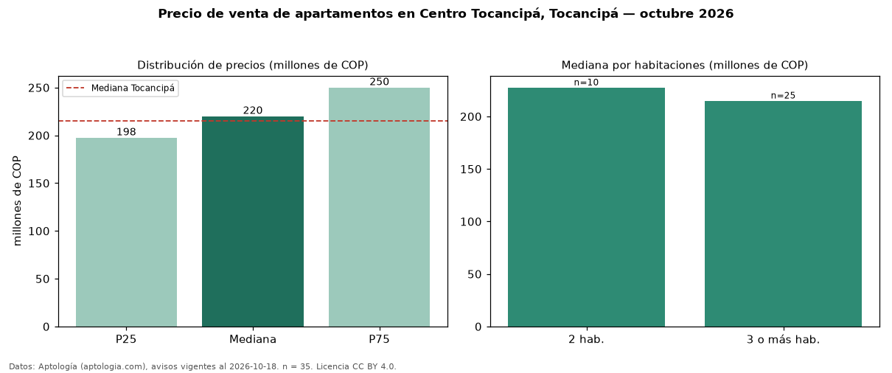

Precio de venta de apartamentos en Centro Tocancipá, Tocancipá — octubre 2026
Con 35 avisos vigentes, el precio mediano de apartamentos en venta en Centro Tocancipá, Tocancipá es COP 220 millones. Prácticamente coincide con la mediana de Tocancipá para apartamentos (COP 215 millones). Por metro cuadrado, la mediana es COP 3,58 millones/m² (n = 35 avisos con área), 2 % por debajo de Tocancipá (COP 3,64 millones/m²). El área mediana anunciada es 61 m². El segmento con más oferta es el de 3 o más habitaciones (25 avisos, mediana COP 215 millones); pasar de 2 habitaciones a 3 o más habitaciones cambia la mediana −5 %. La administración mediana declarada es COP 170.000 al mes (n = 25). El estrato más frecuente es 3 (71 % de los avisos con estrato). La mitad central de los avisos va de COP 198 millones a COP 250 millones (razón 1,3), una dispersión baja. Datos: Aptología (aptologia.com), CC BY 4.0 — https://www.aptologia.com/venta/tocancipa/centro-tocancipa. Archivos: PDF, CSV con las cifras y gráfica PNG.

| Avisos únicos | 35 |
|---|---|
| Percentil 25 | COP 197.500.000 |
| Mediana | COP 220.000.000 |
| Percentil 75 | COP 250.000.000 |
| Mediana por m² | COP 3.581.081 |
Fuente: avisos vigentes de portales inmobiliarios recopilados por Aptología, deduplicados (mínimo 30 avisos únicos por celda). Precios pedidos, no cerrados. Fecha: 2026-10-18.